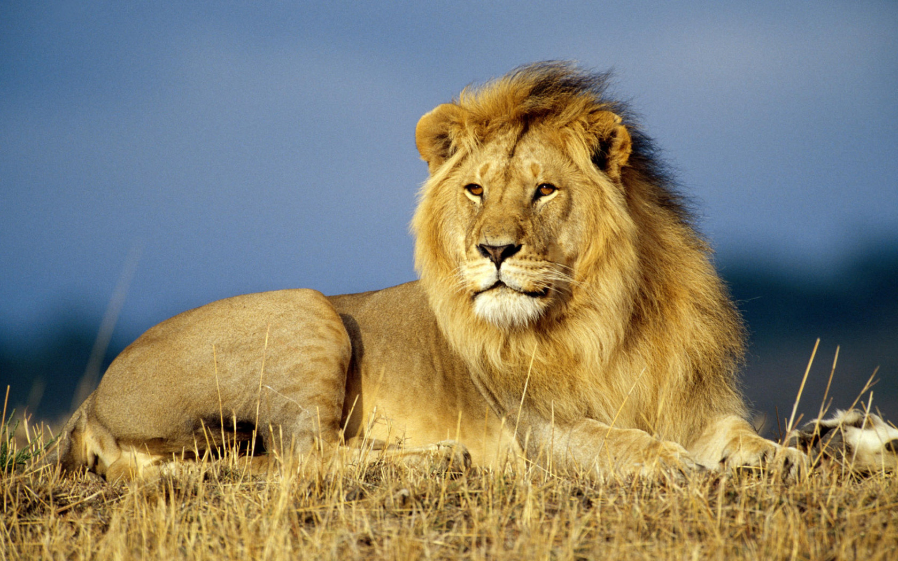

Львы!
Львы — настоящие супер хищники. Они одни из самых крупных кошачьих на нашей планете. величественный «царь зверей» всегда был предметом легенд и мифов. Но в этой статье пойдет речь не о мифах, а о том, что же умеют и какими способностями наделены львы.
В отличие от остальных больших кошек львы от пребывания в группе только выигрывают. Во-первых, чаще всего детеныши в прайде рождаются примерно в одно и то же время, а это значит, что львицы могут воспитывать их вместе и сменять друг друга. В свободное от охоты время самки с львятами отдыхают и спят, а самцы «патрулируют» территорию, чтобы защитить их от незваных гостей.
Во-вторых, совместная охота более эффективна. Добычей африканского льва являются крупные копытные (антилопа гну, буйвол, зебра, бородавочник) весом от 50 до 300 килограммов. С такими животными очень трудно справиться в одиночку, поэтому львам просто необходимо собираться вместе. Кроме того, «царь зверей» не обладает большой выносливостью: он бегает быстро, но на короткие дистанции. Одно животное не сможет долго преследовать свою цель, и ему нужна помощь.
Другие же кошачьи выбирают в качестве жертв более мелких млекопитающих, поэтому и объединяться им не надо. К примеру, рацион леопарда составляют олени, косули, а порой обезьяны и грызуны. Так же питаются и львы-одиночки: их пища по размерам значительно меньше, но ее проще поймать.
Комментарии